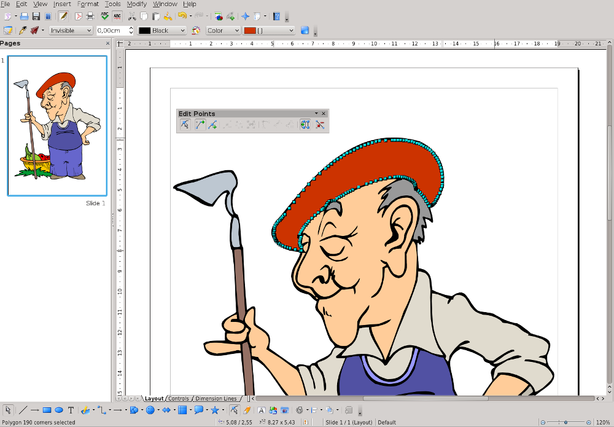

LibreOffice e OpenOffice.org sono due pacchetti open source di programmi da ufficio che hanno in comune il codice sorgente. Che preferiate l'uno o l'altro, dovreste considerarlo uno strumento di grande utilità da usare con Scribus.
In primo luogo, Scribus contiene alcuni potenti filtri di importazione per i vecchi formati nativi di OpenOffice.org, e per il più recente standard internazionale ODF, che entrambi i pacchetti utilizzano molto bene.
In secondo luogo, e altrettanto importante, entrambi i pacchetti sono in grado di utilizzare un grandissimo numero di formati di file diversi, il che significa che potete usarli come versatili convertitori di file, specialmente per documenti di testo e file grafici (vettoriali). Riportiamo di seguito un elenco dei formati di file che LibreOffice può aprire e convertire per l'uso in Scribus.
Formati di documenti di testo:
DocBook (*.xml), documento Hangui WP 97 (*.hwp), documento Lotus WordPro (*.lwp), documento MS Word 5, 6, 95, 97, 2000, XP (*.doc), modello MS Word 95, 97, 2000, XP (*.dot), documento MS Word 2003, 2007 (*.docx, *.docm, *.xml), modello MS Word 2003, 2007 (*.dotx, *.docm), documento MS Works (*.wps), documento Office Open XML (*.docx, *.docm, *.xml), modello Office Open XML (*.dotx, *.docm), Pocket Word (*.psw), Rich Text Format (*.rtf), documento StarOffice Writer 1, 2, 3, 4, 5 (*.sdw), modello StarOffice Writer 1, 2, 3, 4, 5 (*.vor), documento T602 (*.602, *.txt), documento Unified Office Format Text (*.uof, *.uot), documento WordPerfect (*.wpd)
Formati grafici (solo formati vettoriali, poiché vi sono convertitori migliori per le immagini bitmap):
AutoCAD Interchange Format (*.dxf), Computer Graphics Metafile (*.cgm), CorelDraw (*.cdr), Corel Presentation Exchange (*.cmx), Enhanced Metafile (*.emf), OS/2 Metafile (*.met), StarOffice Writer Graphics File (*.sgf), StarOffice Drawing (*.sgv), StarView Metafile (*.svm), MS Visio (*.vsd, *.vst)
A partire dalla versione 4.0, LibreOffice può aprire i file di MS Publisher in Draw, quindi potete almeno convertire un file PUB in un altro formato e poi importare il risultato in Scribus pagina per pagina. Inoltre, potete aprire diapositive create da programmi per presentazioni come PowerPoint o Impress e convertirle in un file in un formato vettoriale o bitmap che può essere importato da Scribus.
|  |
Modifica di un'immagine clipart con LibreOffice Draw |